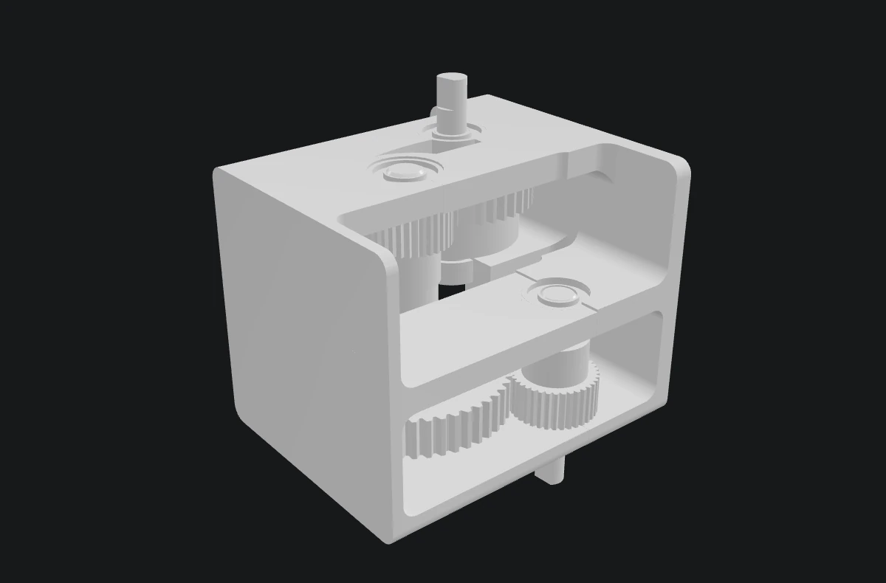
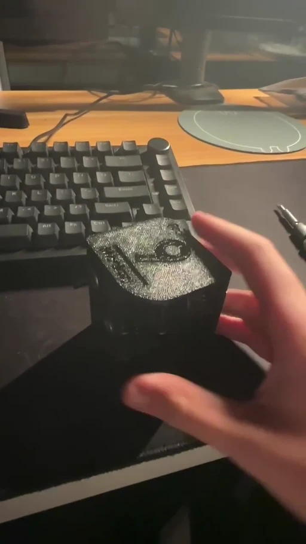
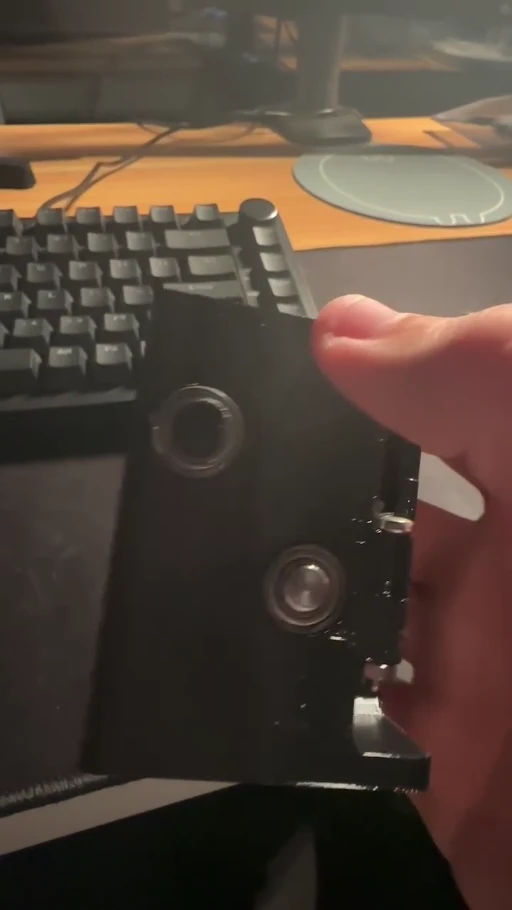

← All projects04 / 08
Gearbox Design.
Interactive CAD

Final gearbox housing
Balancing weight, volume and cost
We evaluated the gearbox against all three criteria. The design led the combined assessment by balancing low weight, compact packaging, and cost.
Shaft and bearing redesign
I designed the 6061 aluminium intermediate shaft, which carried two gears and ran on two bearings. After the initial bearing choice proved unsuitable, I revised the shaft arrangement and reworked the input and output shafts.
Gearbox close-ups


Gearbox footage
NEXT PROJECT · 05Quadruped Robot — V2